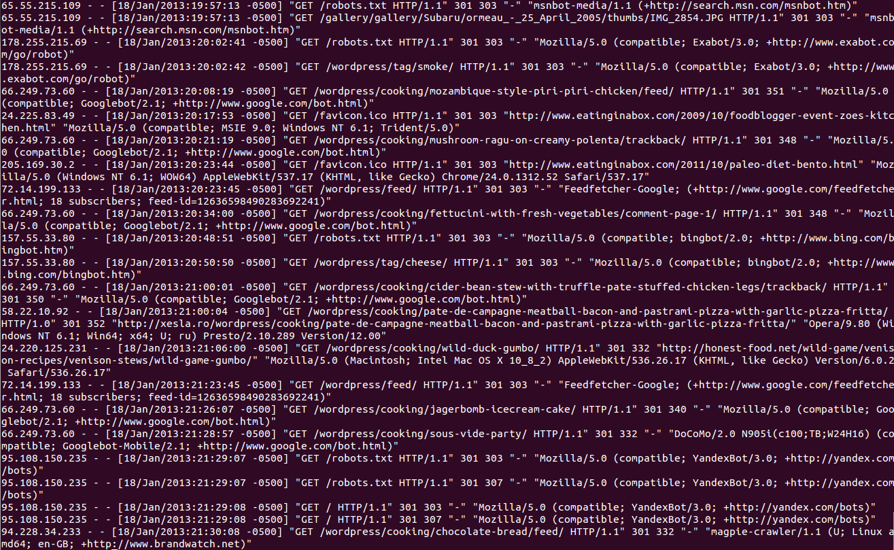

LMAO if you don't logstash

This Deck - http://tech.paulcz.net/ACUG-Logstash
Austin Cloud User Group - Log like you mean it!
Paul Czarkowski / paul@paulcz.net
LOG = TIMESTAMP + DATA
Stop inventing date formats
It's a SOLVED problem

ISO 8601
Pro Tips for Logging Success
A log is human readable...
208.115.111.74 - - [13/Jan/2013:04:28:55 -0500] "GET /robots.txt HTTP/1.1"
301 303 "-" "Mozilla/5.0 (compatible; Ezooms/1.0; ezooms.bot@gmail.com)"
"A human readable, machine parsable representation of an event."
...But logs are NOT !

But they're machine parsable ... right?
208.115.111.74 - - [13/Jan/2013:04:28:55 -0500] "GET /robots.txt HTTP/1.1"
301 303 "-" "Mozilla/5.0 (compatible; Ezooms/1.0; ezooms.bot@gmail.com)"
http://xkcd.com


Actual Regex to parse apache logs.
Evolution of log processing
Stage 1 - Single Host
$ grep -I "Invalid user " /var/log/auth.log* | awk '{ print $10; }'
Stage 2 - A handful of hosts
#!/bin/sh
USER=root
KEY=/root/public_key.pub
for HOST in server1 server2 server3 server4
do
ssh -l $USER -i $KEY $HOST grep -I "Invalid user " \
/var/log/auth.log* | awk '{ print $10; }'
done
Stage 3 - A lot of hosts
$ grep -r -I "Invalid user " /rsyslog/*/auth.log* | awk '{ print $10; }'
Stage 4 - Start Using Splunk
gis://splunk+screenshot
Very Nice!
The first one is free
500MB per day
Stage 5 - Get your first
invoice from Splunk
$,$$$,$$$
Stage 6 - Opensource!
"If a new user has a bad time, it's a bug."
Remember this ?
208.115.111.74 - - [13/Jan/2013:04:28:55 -0500] "GET /robots.txt HTTP/1.1"
301 303 "-" "Mozilla/5.0 (compatible; Ezooms/1.0; ezooms.bot@gmail.com)"
Logstash uses a series of Plugins ...

plugins$ cat chained | grep together | sed 's/like/unix/' > pipeline
logstash.conf
input {
### 34 inputs!
}
filter {
### 29 filters!
}
output {
### 47 outputs!
}
A couple of key filters -
grok
helps parse arbitrary text and structures it.
labels instead of regex patterns.
USERNAME [a-zA-Z0-9_-]+
USER %{USERNAME}
INT (?:[+-]?(?:[0-9]+))
MONTH \b(?:Jan(?:uary)?|Feb(?:ruary)?|Mar(?:ch)?|Apr(?:il)?|May|Jun(?:e)?|Jul(?:y)...
DAY (?:Mon(?:day)?|Tue(?:sday)?|Wed(?:nesday)?|Thu(?:rsday)?|Fri...
COMBINEDAPACHELOG %{IPORHOST:clientip} %{USER:ident} %{USER:auth}
\[%{HTTPDATE:timestamp}\] "(?:%{WORD:verb} %{NOTSPACE:request}
(?: HTTP/%{NUMBER:httpversion})?|-)" %{NUMBER:response}
(?:%{NUMBER:bytes}|-) %{QS:referrer} %{QS:agent}
Turns complex regular expressions into
simple and repeatable patterns.
pattern => ["%{USER} %{MONTH}"]
grok
filter {
grok {
type => "apache"
pattern => ["%{COMBINEDAPACHELOG}"]
}
}
turns this:
208.115.111.74 - - [13/Jan/2013:04:28:55 -0500] "GET /robots.txt HTTP/1.1"
301 303 "-" "Mozilla/5.0 (compatible; Ezooms/1.0; ezooms.bot@gmail.com)"
into this:
{
"client address": "208.115.111.74",
"user": null,
"timestamp": "13/Jan/2013:04:28:55 -0500",
"verb": "GET",
"path": "/robots.txt",
"query": null,
"http version": 1.1,
"response code": 301,
"bytes": 303,
"referrer": null
"user agent": "Mozilla/5.0 (compatible; Ezooms/1.0; ezooms.bot@gmail.com)"
}
Date
takes a timestamp and makes it ISO 8601 Compliant
Turns this:
13/Jan/2013:04:28:55 -0500Into this:
2013-01-13T04:28:55-0500and uses it as the timestamp of the event.
Date
filter {
date {
type => "apache"
match => ["timestamp","dd/MMM/YYY:HH:mm:ss Z"]
}
}
Remember our Apache log from earlier?
Define Inputs and Filters.
input {
file {
type => "apache"
path => ["/var/log/httpd/httpd.log"]
}
}
filter {
grok {
type => "apache"
pattern => "%{COMBINEDAPACHELOG}"
}
date {
type => "apache"
}
geoip {
type => "apache"
}
}
Define some Outputs.
output {
statsd {
type => "apache"
increment => "apache.response.%{response}"
# Count one hit every event by response
}
elasticsearch {
type => "apache"
}
}
Graphite !

image 'borrowed' from @jordansissel
Kibana - Logstash Web Frontend
Kibana - Custom Dashboards!

Visualize Important Data!
http://demo.kibana.orgInteresting Analytics
http://demo.kibana.org
Analyze Twitter Streams
Logstash - Twitter Input
input {
twitter {
type => "twitter"
keywords => ["bieber","beiber"]
user => "username"
password => "*******"
}
}
output {
elasticsearch {
type => "twitter"
}
}


Already have Central Rsyslog/SyslogNG Server?
input {
file {
type => "syslog"
path => ["/data/rsyslog/**/*.log"]
}
}
filter {
grok {
type => "syslog"
pattern => "%{SYSLOGBASE}"
}
date {
type => "syslog"
match => ["timestamp", "MMM dd HH:mm:ss"]
}
}
output {
type => "elasticsearch"
}
Act as a Central Syslog Server
Good for Appliances / Switches
input {
udp {
type => "syslog"
port => "514"
}
}
filter {
grok {
type => "syslog"
pattern => "%{SYSLOGBASE}"
}
date {
type => "syslog"
match => ["timestamp", "MMM dd HH:mm:ss"]
}
}
output {
type => "elasticsearch"
}
Use matching inputs and outputs to
Send file contents to another logstash for processing
Use an encrypted Transport
input {
file {
type => "openstack"
path => ["/var/log/cinder/*.log", "/var/log/nova/*.log"]
}
}
output {
lumberjack {
hosts => ["logstash-indexer1", "logstash-indexer2"]
ssl_certificate => "/etc/ssl/logstash.crt"
}
}
input {
lumberjack {
type => "openstack"
ssl_certificate => "/etc/ssl/logstash.crt"
ssl_key => "/etc/ssl/logstash.key"
}
}
filter {
grok {
type => "openstack"
pattern => "%{OPENSTACK}"
}
}
output {
elasticsearch {}
}
System Metrics ?
input {
exec {
type => "system-loadavg"
command => "cat /proc/loadavg | awk '{print $1,$2,$3}'"
interval => 30
}
}
filter {
grok {
type => "system-loadavg"
pattern => "%{NUMBER:load_avg_1m} %{NUMBER:load_avg_5m} %{NUMBER:load_avg_15m}"
named_captures_only => true
}
}
output {
graphite {
host => "graphite-server"
type => "system-loadavg"
metrics => [ "hosts.%{@source_host}.load_avg.1m", "%{load_avg_1m}",
"hosts.%{@source_host}.load_avg.5m", "%{load_avg_5m}",
"hosts.%{@source_host}.load_avg.15m", "%{load_avg_15m}" ]
}
}
Logstash Architecture
Use Queues ( RabbitMQ, 0mq, Redis) to help scale horizontally.

Local log dir on clients = cheap queue
Further Reading
Questions ? Live Demo ?
https://github.com/paulczar/docker-logstash-demo
paul@paulcz.net | @pczarkowski | tech.paulcz.net